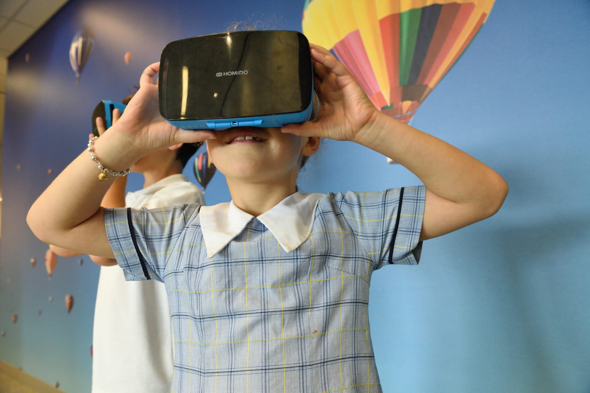
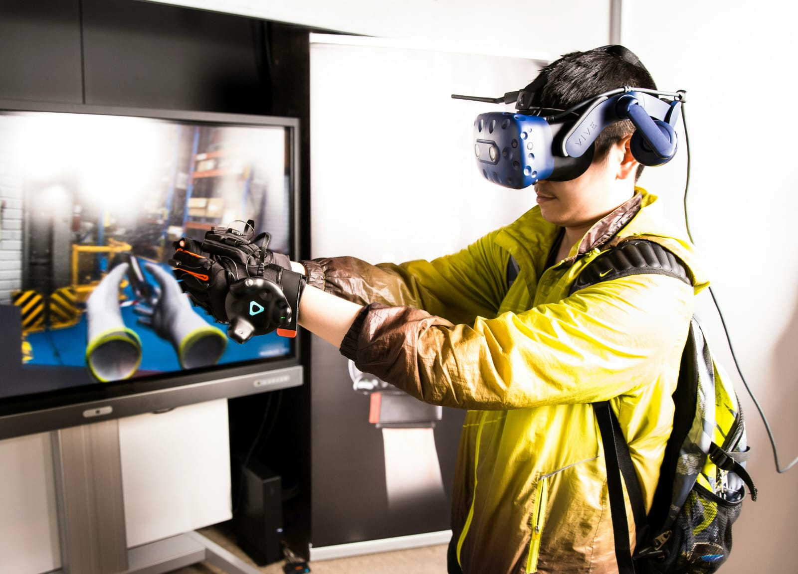
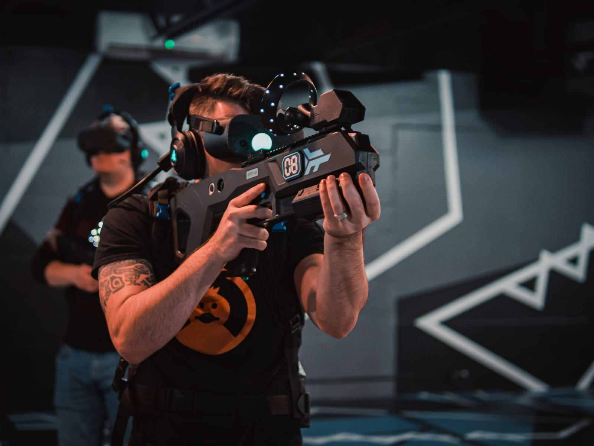

الجيل الجديد من التقنية
شهدت السنوات الأخيرة تطوراً متسارعاً في وسائل التفاعل الرقمي، حيث انتقلنا من الشاشات التقليدية الثنائية الأبعاد إلى بيئات رقمية تفاعلية بالكامل تغير طريقة تعاملنا مع البيانات والمعلومات اليومية. تهدف هذه الحلول البرمجية المتقدمة إلى تحسين تجربة المستخدم ودمج المحاكاة الذكية في مختلف مجالات الحياة العملية والعلمية.
ما هي هذه التقنية؟
هي تقنية جديدة تسمح لنا بنقل وتجربة عوالم خيالية أو حقيقية وكأننا داخلها تماماً باستخدام نظارات وأجهزة خاصة لتدمج البيئة المحيطة بأنظمة الحاسب المتطورة. تعتمد التقنية على دمج الحواس البشرية مع الرسوميات المصممة بواسطة الكمبيوتر لإنشاء محاكاة بصرية وصوتية عالية الدقة.
أبرز استخدامات التقنية
أولاً: الطب والتدريب الجراحي
تتيح للأطباء وطلاب الطب إجراء عمليات جراحية افتراضية دقيقة ومحاكاة الحالات الحرجة قبل تطبيقها على أرض الواقع، مما يرفع الكفاءة ويقلل الأخطاء.
ثانياً: التعليم والمحاكاة العلمية
تساعد الطلاب على استكشاف الفضاء الخارجي، وزيارة المواقع التاريخية القديمة، وإجراء التجارب الكيميائية الخطيرة داخل مختبرات افتراضية آمنة.

ثالثاً: الألعاب والترفيه الرقمي
تنقل اللاعب إلى قلب الحدث ليتفاعل مع البيئة المحيطة به ويتحرك داخلها بحرية كاملة، مما يوفر تجربة غامرة ومستويات غير مسبوقة من الواقعية.

رابعاً: الدفاع والأمان
تستخدم في تدريب الطيارين وأفراد القوات المسلحة على قيادة المركبات ومواجهة السيناريوهات القتالية الصعبة من خلال بيئة محاكاة آمنة تماماً.

شاهد هذا المقطع اللي يوضح الفرق بين الواقع الافتراضي والمعزز:
⚠️ فضلاً، لا تنسى تفعيل صوت الفيديو من زر التحكم للاستماع إلى الشرح.